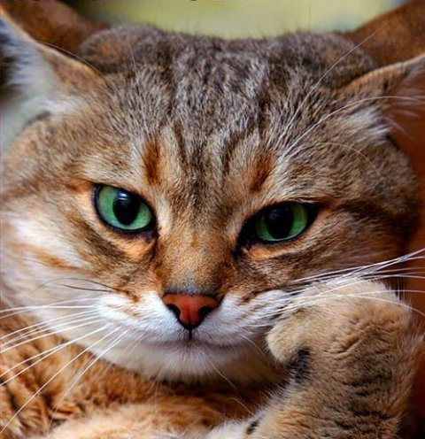

Личная страница Кириченко Е.Н.
Мои увлечения
Любимые животные
Мои цели
Цитата дня:
Худший враг любой пропаганды — интеллектуализм.
- Й.Геббельс
Мои любимые животные - это кошачьи.
Их миллионы на нашей планете и все их виды уникальны и неповторимы, а еще они очень милые)
